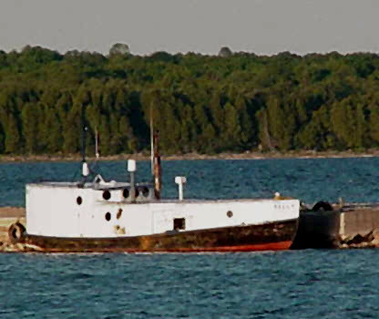

The Yurts at Pacific Trails
- What is a yurt?
-
Our luxury yurts are permanent structures four feet off the ground. Each yurt has canvas walls, a wooden floor, and a roof dome that can be opened.
- How are the yurts furnished?
-
Each yurt is furnished with a gas fireplace, king-size bed, luxury linens, and a private deck with panoramic views.
- What should I bring?
-
Most guests pack comfortable walking shoes and plan to dress for changing weather with layers of clothing.
